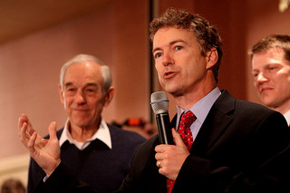
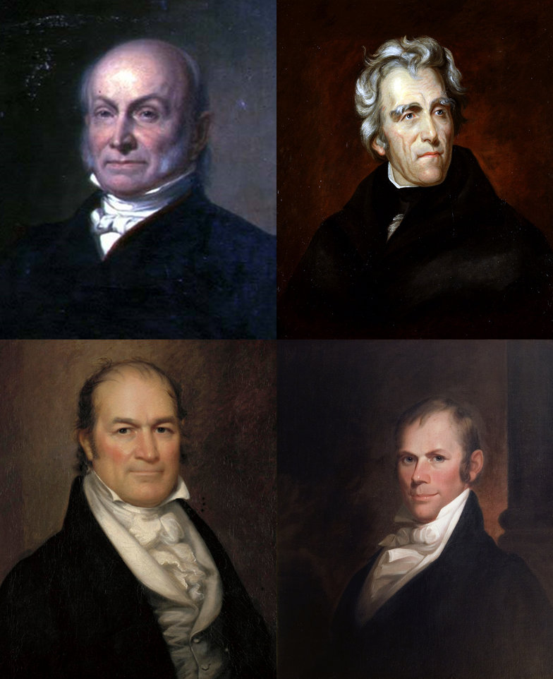
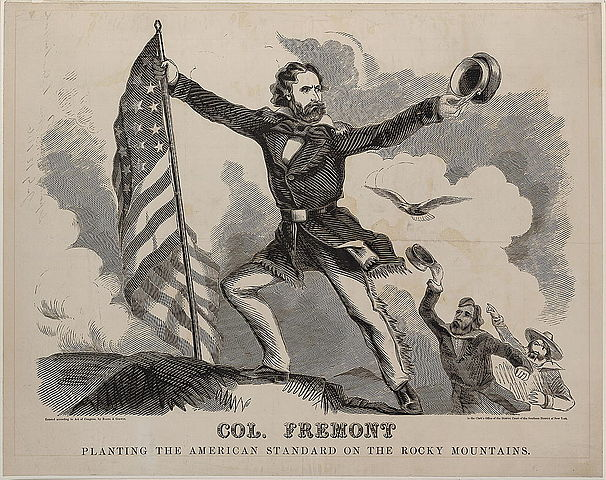
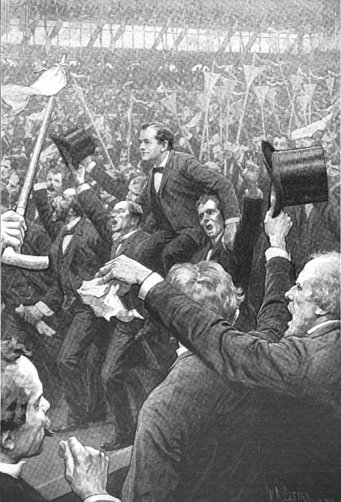
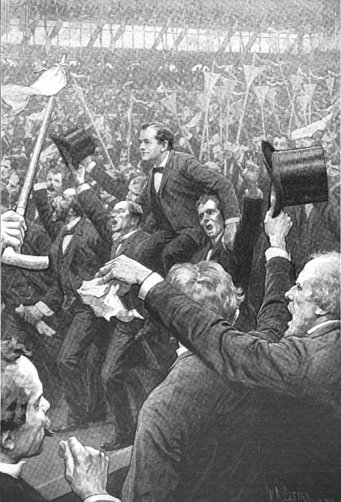

Political Parties
Dr. Christopher N. Lawrence
Middle Georgia State University
POLS 1101: American Government
Disable Narration
What is a political party?
One definition:
A political organization that sponsors candidates for public office under its own “brand” name.
Another definition:
A coalition of political candidates who seek public office with a common political agenda (platform).
Parties vs. Interest Groups
An interest group is in many ways a lot like a party.
Both parties and interest groups are linkage institutions.
Parties primarily seek to influence the political system by electing candidates to public office.
Interest groups try to influence politics by both:
Working with those candidates already in office.
Working to elect candidates who are expected to favor their organization's goals.
A “necessary evil”?
Founders' view: parties were forms of faction; inimical to republican government.
Political scientist E.E. Schattschneider: “Modern democracy is unthinkable save in terms of the parties.”
Political parties exist in all democratic societies.
Political scientists define democracy in part in terms of parties.
How many parties?
-
Most democracies have more than two major parties:
Mexico: 3 major parties (PAN, PRI, PRD).
Canada: 4 major parties (Conservative, Liberal, Bloc Québécois, New Democrats).
Britain: 3 major parties (Conservative, Labour, Liberal Democrats), with strong regional parties in Scotland, Wales, and Northern Ireland.
Why Two Parties?
The two-party system persists in America for several reasons.
The electoral system:
The U.S. uses single member districts with plurality elections (“first past the post”).
Many other democracies use some form of proportional representation or a mixture with a strong proportional element instead.
The presidency and Electoral College:
The “big prize” encourages two nationwide major parties.
Parties need to win states to gain any electors.
Primary Elections Help Major Parties
-

Ambitious candidates seek the nominations of a major party rather than joining minor parties or forming their own parties.
Examples: former U.S. Representative Ron Paul (R-Texas) and his son, U.S. Senator Rand Paul (R-Ky.).
Rules Favor Major Parties
Anti-fusion and sore loser laws make it harder for minor parties to nominate popular candidates.
The Australian ballot means minor parties face difficulty qualifying their candidates for the ballot.
Presidential candidate matching funds require at least 5% of the vote in previous election.
Media downplays minor party candidates.
Changes in Party Alignments
Although the U.S. has had a two-party system since 1796, not always the same two parties.
Transitions between eras of party competition (“party systems”) are fairly frequent—known as realignments.
When large groups of voters change their party allegiances.
Realignments can either help give rise to a new major party, or change the balance of power between the existing major parties.
The First Party System
While “factions” existed in colonial times, early American elections had no true parties.
During Washington's administration, two groups emerged and soon became political parties:
Federalists led by Alexander Hamilton supported a stronger central government, closer ties w/Britain.
Democratic-Republicans led by Thomas Jefferson supported decentralized government, closer ties w/France.
Decline of the Federalists
-
Unpopular actions during the Adams administration:
The Jay Treaty.
Alien and Sedition Acts.
On wrong side of war with Britain (War of 1812).
Federalists essentially eliminated from national electoral politics by 1820: “Era of Good Feelings.”
The “Corrupt Bargain” of 1824
-

The 1824 presidential contest split the Democratic-Republicans:
Andrew Jackson (Tenn.)
John Quincy Adams (Mass.)
William H. Crawford (Ga.)
Henry Clay (Ky.)
Since no candidate got a majority of electoral votes, election decided by the House of Representatives.
“Corrupt Bargain” puts Adams in the White House.
The Second Party System
As a result the Democratic-Republicans fragment into two factions that become separate parties:
Andrew Jackson's supporters called themselves Democrats. Supported national expansion, freer trade with Europe.
Opponents under Clay organized as the National Republicans but soon became the Whigs: disliked Jackson, opposed war with Mexico, support Clay's American Plan.
Jackson (and the Democrats) go on to dominate politics for the next 30 years.
The End of the Whigs
By the 1850s, both parties were split by the question of slavery and other “sectional” issues.
-

Some former Whigs organized a new party, the Republicans, in 1854; the party was unified against slavery and attracted both anti-slavery Whigs and Democrats.
1860: Democrats nominate two candidates; Whigs nominate nobody. Lincoln's election and Republican triumph in Congress leads to secession; civil war.
The Third Party System
The two parties that emerged after the Civil War remain with us today, but in altered forms.
At the end of Reconstruction:
The Democrats had the overwhelming support of southern whites and, increasingly, farmers.
The Republicans' supporters were concentrated in the industrializing cities; also included southern blacks (although most were soon disenfranchised).
The Fourth Party System
The 1896 election reinforced this division:
-

Democrats increasingly identified with the populist and agrarian movements, along with the South.
William Jennings Bryan.
-

Republicans identified with industrialization and urbanization in the Midwest and Northeast.
Both parties tried to attract support from Progressives with mixed success.
The Fifth Party System
The Republicans dominated presidential elections until the beginning of the Great Depression.
Exception: Wilson (1912, 1916) against a divided Republican Party.
Realignment based on economics (ca. 1932):
FDR and the Democrats were able to expand their coalition by adding working-class urban voters, including northern blacks.
Republicans became increasingly identified with the upper middle class and wealthy.
A Sixth Party System?
The economic division between the two parties persists to this day.
However, the 1960s and 1970s gave rise to new issues in politics:
Democrats became increasingly identified with social liberalism; Republicans identified with cultural conservatism.
The rise of dealignment: many citizens no longer identify with either major party.
No consensus among political scientists.
A Seventh Party System?
Realignments historically have happened every 32 to 36 years—if one happened around 1968, one is now “due.”
Although it's too early to be certain, there are some possible sources of realignment:
National security/terrorism.
Economic divisions returning to the forefront.
On the other hand, true realignments may no longer be possible due to changes in the political system.
The Tripartite Model
Political scientists distinguish between three aspects of American political parties:
Party organizations: volunteers and professionals who raise money and recruit candidates.
Party in government: public officials who are affiliated with the party.
Party in the electorate: citizens who identify with the party and support its candidates
To meaningfully discuss parties, we need to be clear which aspect(s) we are talking about.
Party Organizations
-
Parties are organized at the local, state, and national levels.
Parties' national organizations are known as the national committee: runs party business between national conventions.
Conventions choose presidential nominees; also establish the party platform.
Party Identification
Party identification refers to the feeling of attachment citizens have to the major political parties.
Political scientists who see dealignment argue that the increase in independent voters reflects a decline in the importance of parties.
Other political scientists have shown that while voters have become more likely to call themselves independent, many “independent” citizens vote as if they are partisans.
Evaluating Parties Today
Many political scientists argue parties should be stronger than they are today.
Benefits of strong parties:
Help overcome the separation of powers to make government more efficient, particularly under unified government.
Synthesize society's demands into policy.
Simplify voting by reducing the field of candidates and clarifying choices.
An example: the responsible party model.
Evaluating Parties Today
Others have argued that parties are too strong.
Drawbacks of strong parties:
Do not always deliver on their promises.
Can be dictatorial towards their members.
Present stark “either/or” choices.
May block worthwhile policies for partisan instead of substantive reasons.
Reformers have generally won the public arguments.
Are Parties Weaker?
In some ways, parties have become weaker:
National parties are coalitions of independent state parties; historically, the “national party” didn't exist as a permanent organization.
Progressive reforms to reduce influence of “machines” gave outsiders control of party nominations, reduced patronage.
Campaign finance reform has limited party spending on campaigns.
Voters have fewer ties to local parties due to redistricting, population mobility.
Are Parties Stronger?
In other ways, parties have become stronger:
Fewer regional splits within the parties.
More “party-line” voting in Congress and state legislatures.
National parties have become better organized.
Either way, parties today clearly fall short of the “responsible party” model.
Copyright and License
The text and narration of these slides are an original, creative work, Copyright © 2000–15 Christopher N. Lawrence. You may freely use, modify, and redistribute this slideshow under the terms of the Creative Commons Attribution-Share Alike 4.0 International license. To view a copy of this license, visit http://creativecommons.org/licenses/by-sa/4.0/ or send a letter to Creative Commons, 444 Castro Street, Suite 900, Mountain View, California, 94041, USA.
Other elements of these slides are either in the public domain (either originally or due to lapse in copyright), are U.S. government works not subject to copyright, or were licensed under the Creative Commons Attribution-Share Alike license (or a less restrictive license, the Creative Commons Attribution license) by their original creator.
Works Consulted
The following sources were consulted or used in the production of one or more of these slideshows, in addition to various primary source materials generally cited in-place or otherwise obvious from context throughout; previous editions of these works may have also been used. Any errors or omissions remain the sole responsibility of the author.
- Barbour, Christine and Gerald C. Wright. 2012. Keeping the Republic: Power and Citizenship in American Politics, Brief 4th Edition. Washington: CQ Press.
- Coleman, John J., Kenneth M. Goldstein, and William G. Howell. 2012. Cause and Consequence in American Politics. New York: Longman Pearson.
- Fiorina, Morris P., Paul E. Peterson, Bertram D. Johnson, and William G. Mayer. 2011. America's New Democracy, 6th Edition. New York: Longman Pearson.
- O'Connor, Karen, Larry J. Sabato, and Alixandra B. Yanus. 2013. American Government: Roots and Reform, 12th Edition. New York: Pearson.
- Sidlow, Edward I. and Beth Henschen. 2013. GOVT, 4th Edition. New York: Cengage Learning.
- The American National Election Studies.
- Various Wikimedia projects, including the Wikimedia Commons, Wikipedia, and Wikisource.